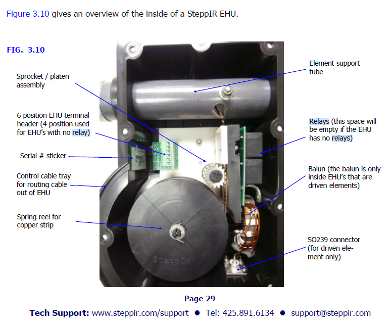

[Date Prev][Date Next][Thread Prev][Thread Next][Date Index][Thread Index]
Re: [NCDXC Chat] Weird Problem with SteppIR 3 element Yagi with 30/40 meter loop
Hi John,
I have a similar problem with my DB18 but only on 40m in the forward position, hitting the 180 button problem disappears.
As I increase power, eventually SWR shoots too high and my SPE1.3K amp goes into standby. I spoke with John Mertel WA7IR (SteppIR CEO) at Semicon last year, described the issue and he said I most likely have a bad relay up at the antenna. He said relays can be ordered from SteppIR but I haven't yet tilted tower to bring antenna down to ground level to service it so just living with it for now.
Here is picture of the EHU showing component locations...from assembly manual:
Not sure if this is the root cause of your issues but sounds somewhat similar. Best to call SteppIR product support for debug suggestions.
73,Rob - AG6RK
On Thursday, November 9, 2023 at 11:03:04 AM PST, JOHN A EISENBERG via Chat <chat@ncdxc.org> wrote:
Thanks Bill,
Yes, there is a balun in the driven EHU. I don't see how after applying >300Wthe vswr can jump to >2.5:1 and remain high when the power is decreased to 25W.Then at 25W the antenna may be re-calibrated and returns to 1.04:1.
Baffling to me,
john k6yp
On Thursday, November 9, 2023 at 10:45:19 AM PST, bill@redflatcat.com <bill@redflatcat.com> wrote:
John,
Does your antenna have a balun up there like my DB-36?
I wonder if it has been damaged.
Bill
WB6JJJ
From: Chat <chat-bounces@ncdxc.org> On Behalf Of JOHN A EISENBERG via Chat
Sent: Thursday, November 9, 2023 10:34 AM
To: NCDXC Discussion List <chat@ncdxc.org>; NCCC Main Reflector <nccc@groups.io>; JOHN A EISENBERG <jeisenb558@aol.com>
Subject: [NCDXC Chat] Weird Problem with SteppIR 3 element Yagi with 30/40 meter loop
To the club brain trust of SteppIR owners,
I am having the darnedest problem with my SteppIR 3 element Yagi with the
30/40 meter loop and SDA 100 controller. The antenna has performed
flawlessly for over 5 years. It continues to function perfectly on all bands
40-10 meters with my transceiver alone at any power level up to 200W.
The problem occurs when I engage my solid state power amplifier (SSPA).
As I increased my transmit power above about 300W, by increasing the drive
power to my SSPA , the antenna's VWSR increases abruptly from its normal
1.04:1 to greater than 2.55:1. At first I thought that the controller was picking
up RFI from the control cable so I wrapped the control cable around several
large mix 31 snap on ferrite beads. This did not solve the problem. I then
repeated the experiment calibrating the antenna so that its VSWR was 1.04:1
at 25W from the transceiver. I then turned off the SDA 100 controller and
removed its dc power. The antenna VSWR remained at 1.04:1 at the 25W power
level. Engaging the amplifier and cranking up its output power to over about 300W
caused the prior abrupt increase in VSWR to over 2.55:1. The problem occurs on
all bands 20 through 10 meters. Finally to take the SDA 100 controller totally out
of the picture I tried the experiment detailed below. In this test I calibrated the antenna
and measured a VSWR of 1.04:1 at 25W. I them removed the 25 pin d-sub connector
from the rear of the SDA. VSWR remained ay 1.04:1. Engaging the amplifier and
increasing its output power to over about 300W caused the abrupt increase in VSWR
to over 2.55:1. This completely baffles me as I do not see how the antenna can detune
from its matched condition to a poor VSWR with no power applied. After re-connecting
the SDA 100 controller and going back to just exciter power (25-200W), I can always
restore the antenna's matched condition by either doing a calibrate procedure or often
(but not always) by simply recycling the SDA 100's power with its on/off switch once
or twice. Here are the details of the last experiment I described.
Test of SteppIR Yagi with 25 pin d-sub connector removed from SDA 100 controller
1. SDA 100 dc power connected. 25 pin d-sub connector inserted into SDA 100.
2. Antenna rotor off.
3. Radio at 21.025 kHz. Mode is cw. Pout set at 25W into dummy load.
4. Turn on SDA 100 with its power switch.
5. Antenna is 3 element SteppIR Yagi with 30/40 meter loop.
6. Calibrate antenna
7. Key the Icom 7800 exciter with SSPA in bypass mode.
8. Palstar HF Auto antenna tuner following SSPA is in bypass mode
9. Key the IC 7800. Measured VSWR is 1.04:1 at 25W
10. Turn off SDA 100 power switch.
11. Key the IC 7800. Measured VSWR is 1.04:1 at 25W
12. Remove the 25 pin d-sub connector from rear of SDA 100
13. Key the IC 7800. Measured VSWR is 1.04:1 at 25W
14. Turn on SSPA.
15. Key the Icom 7800. Amp receives 25W drive power. Power output is ~500W.
Measured VSWR is 2.55:1.
16. Re-connect the d-sub connector to the SDA 100.
17. Calibrate the antenna or simply turn off the SDA 100 and turn it back on. (Two short blinks of the tune LED occur)
18. Switch the SSPA to bypass mode
19. Key the IC 7800. Measured VSWR is back to 1.04:1
I am completely baffled by this. The only thing I can imagine is that the control cable
is picking up RFI that is rectified in one of the antenna's EHUs and the resulting rectified
dc is somehow moving a stepper motor move just enough to raise the VWSR. I can't see
how this could really happen.
Does anyone have a better idea or suggestion how to fix my antenna?
Thank you and best 73,
John Eisenberg K6YP
_______________________________________________
Chat mailing list
Chat@ncdxc.org
http://mail.ncdxc.org/mailman/listinfo/chat_ncdxc.org

{kind=link}